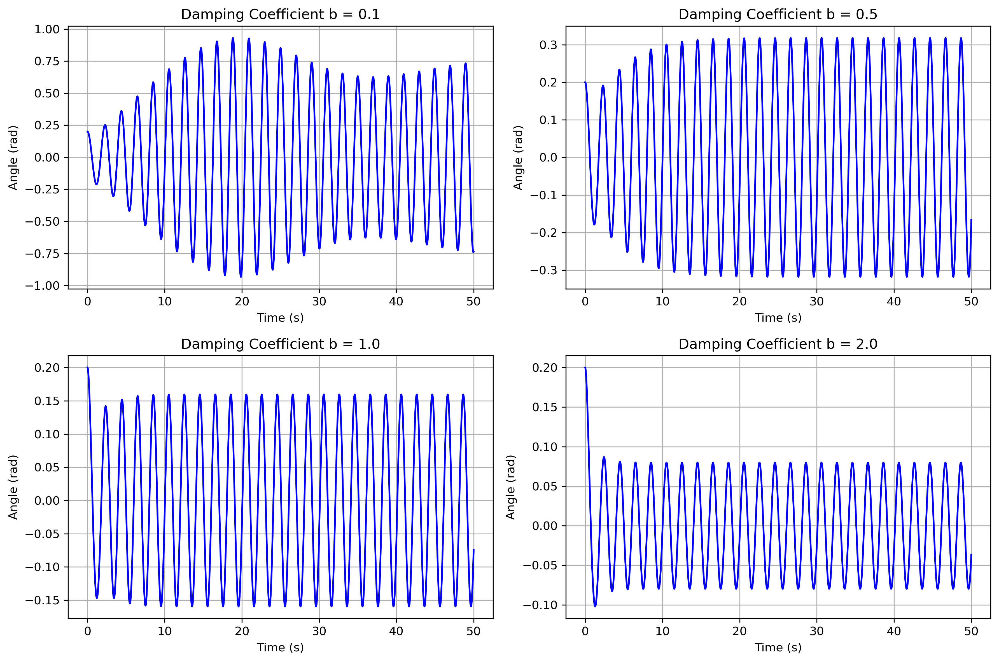
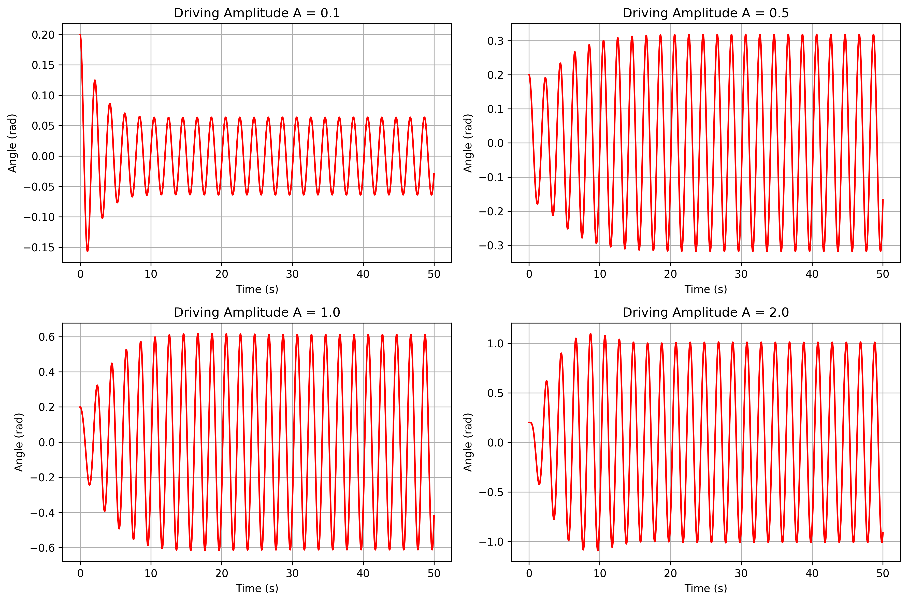
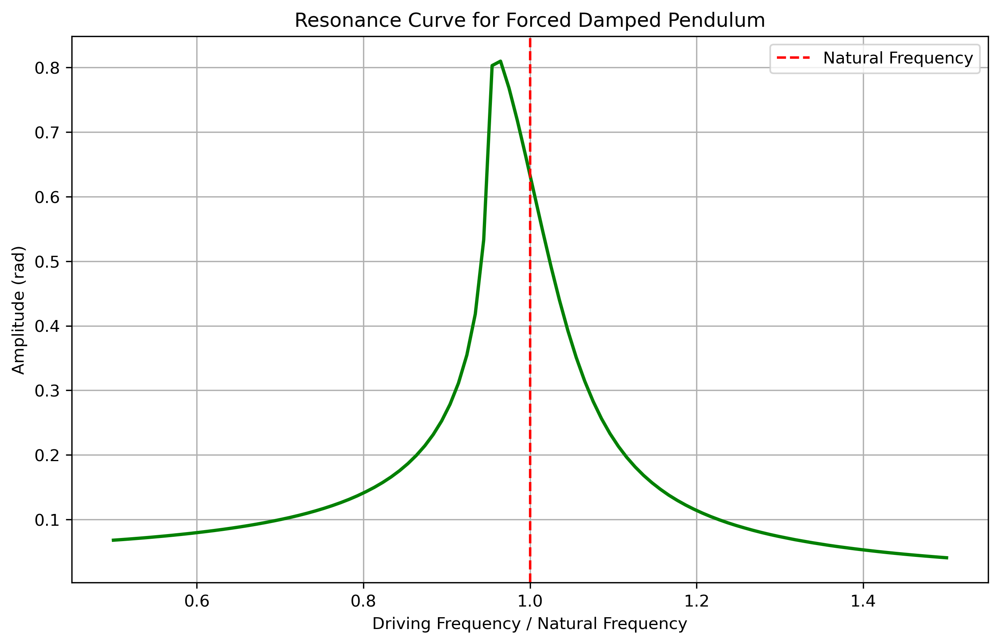
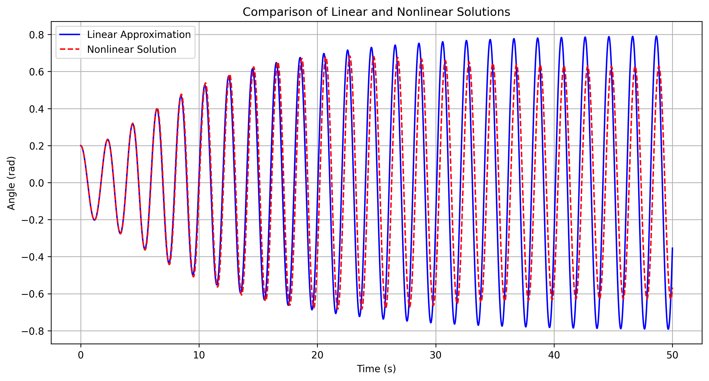
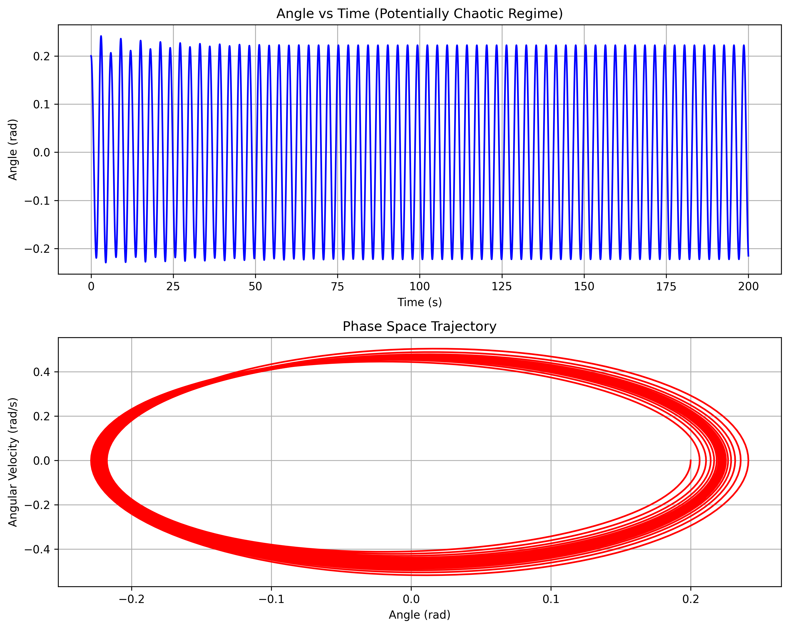
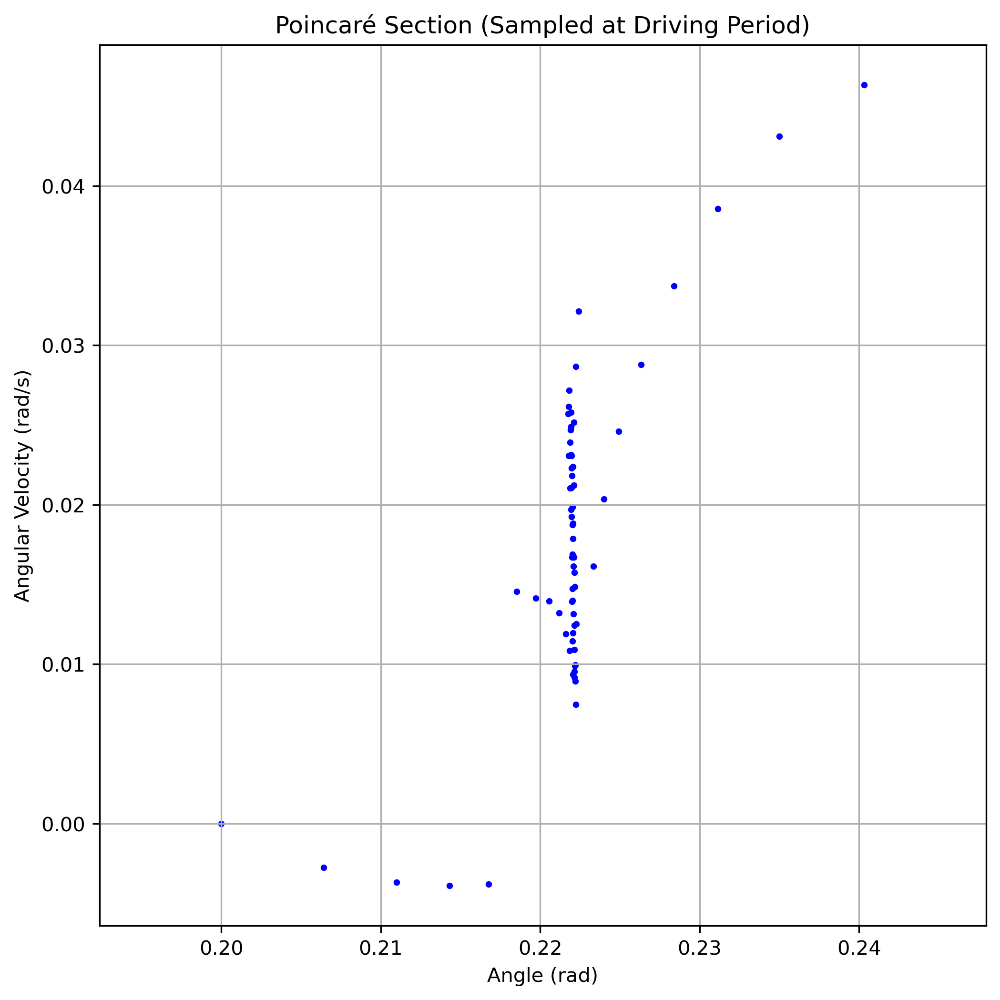
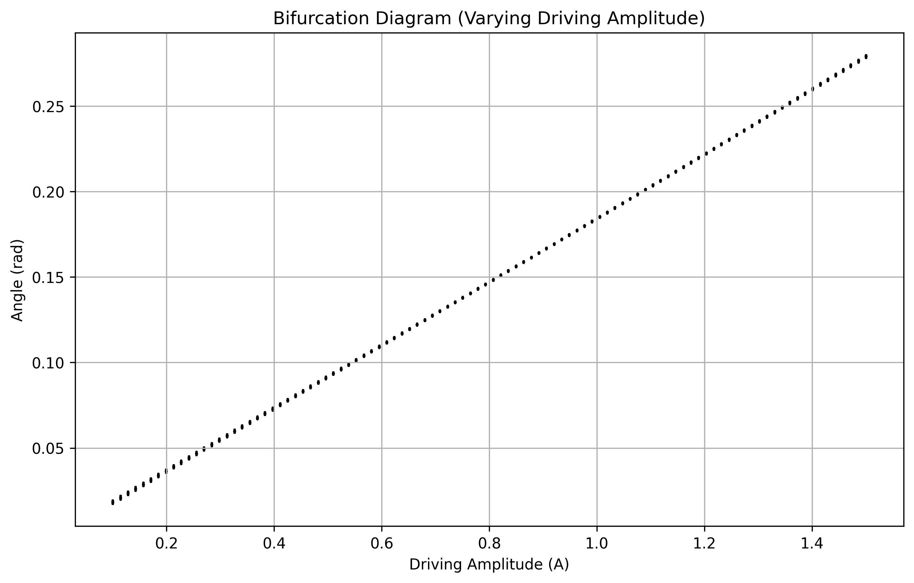
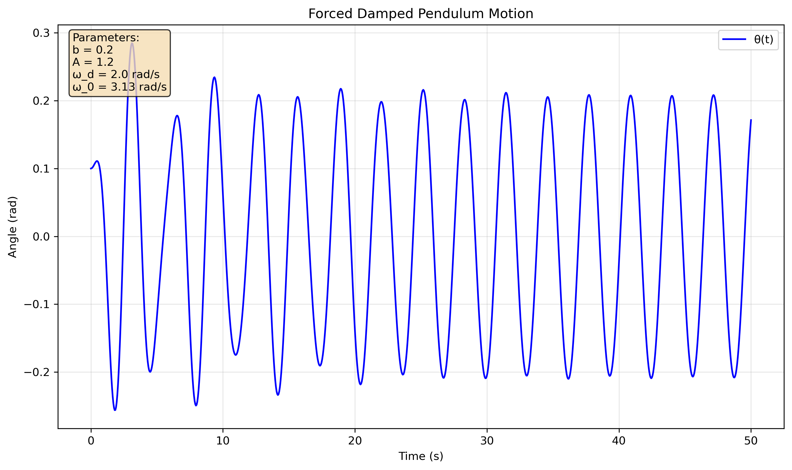

Problem 2
Investigating the Dynamics of a Forced Damped Pendulum
1. Theoretical Foundation
Governing Equation
The motion of a forced damped pendulum is governed by the nonlinear differential equation:
where:
- \(\theta\) is the angular displacement,
- \(b\) is the damping coefficient,
- \(g\) is the acceleration due to gravity,
- \(L\) is the length of the pendulum,
- \(A\) is the amplitude of the external driving force,
- \(\omega\) is the driving frequency.
Approximate Solutions for Small Angles
For small angles (\(\theta \ll 1\), so \(\sin \theta \approx \theta\)), the equation simplifies to:
where \(\omega_0 = \sqrt{g/L}\) is the natural frequency of the undamped pendulum.
This corresponds to a damped, driven harmonic oscillator. The general solution consists of:
-
Transient solution (dies out due to damping): \(\(\theta_{\text{trans}}(t) = e^{-bt/2}[C_1 \cos(\omega_d t) + C_2 \sin(\omega_d t)]\)\) where \(\omega_d = \sqrt{\omega_0^2 - (b/2)^2}\) is the damped frequency.
-
Steady-state solution (long-term behavior): \(\(\theta_{\text{steady}}(t) = \frac{A}{\sqrt{(\omega_0^2 - \omega^2)^2 + (b\omega)^2}} \cos(\omega t - \phi)\)\)
where the phase lag is: \(\phi = \arctan\left(\frac{b\omega}{\omega_0^2 - \omega^2}\right)\)
Complete solution: \(\theta(t) = \theta_{\text{trans}}(t) + \theta_{\text{steady}}(t)\)
Resonance Conditions
Resonance occurs when maximum energy transfer occurs between the driving force and the pendulum. For a lightly damped system, this happens near \(\omega \approx \omega_0\).
Key characteristics of resonance:
-
Amplitude response: The steady-state amplitude is: \(\(A_{\text{response}} = \frac{A}{\sqrt{(\omega_0^2 - \omega^2)^2 + (b\omega)^2}}\)\)
-
Maximum amplitude occurs at driving frequency: \(\(\omega_{\text{res}} = \sqrt{\omega_0^2 - \frac{b^2}{2}}\)\)
-
Quality factor: \(Q = \frac{\omega_0}{b}\) measures the sharpness of resonance
- High Q: Sharp resonance peak, low damping
-
Low Q: Broad resonance, high damping
-
Energy considerations: At resonance, the driving force does maximum work per cycle, leading to sustained large-amplitude oscillations despite energy dissipation from damping.
2. Analysis of Dynamics
Influence of System Parameters
The forced damped pendulum exhibits rich dynamics depending on three key parameters:
Damping Coefficient (\(b\))
- Low damping (\(b < \omega_0\)): Underdamped oscillations, potential for chaos
- Critical damping (\(b = 2\omega_0\)): Fastest return to equilibrium
- High damping (\(b > 2\omega_0\)): Overdamped, slow approach to equilibrium

Driving Amplitude (\(A\))
- Small \(A\): Linear response, simple harmonic motion
- Moderate \(A\): Nonlinear effects become apparent
- Large \(A\): Complex dynamics, chaos, period-doubling bifurcations

Driving Frequency (\(\omega\))
- Near \(\omega_0\): Resonance phenomena dominate
- Far from \(\omega_0\): Weak response, linear behavior
- Specific ratios: Subharmonic resonances, complex dynamics

Linear vs Nonlinear Behavior
For small angles, the linear approximation holds well, but for larger amplitudes, nonlinear effects become significant:

Key differences: - Linear system: Symmetric oscillations, predictable frequency response - Nonlinear system: Asymmetric motion, frequency-dependent behavior, potential chaos
Transition to Chaos
The system exhibits a rich spectrum of dynamics as parameters change:
Phase Space Analysis
Phase portraits reveal the system's long-term behavior:

- Fixed points: Stable equilibrium states
- Limit cycles: Periodic oscillations
- Strange attractors: Chaotic motion
Poincaré Sections
Stroboscopic sampling reveals the underlying structure:

- Discrete points: Periodic motion
- Closed curves: Quasiperiodic motion
- Fractal structure: Chaotic motion
Bifurcation Analysis
Parameter sweeps show transitions between different dynamic regimes:

Route to chaos: 1. Period-1 oscillations at low driving amplitude 2. Period-doubling cascade as amplitude increases 3. Chaos emerges through accumulated bifurcations 4. Periodic windows within chaotic regions
3. Practical Applications
The forced damped pendulum serves as a fundamental model for numerous real-world systems:
Energy Harvesting Systems
- Piezoelectric generators: Convert mechanical vibrations to electricity
- Optimization: Understanding resonance maximizes power output
- Nonlinear effects: Large amplitude motion can improve energy efficiency
Structural Engineering
- Suspension bridges: Wind-induced oscillations (Tacoma Narrows Bridge collapse)
- Buildings: Earthquake response and damping design
- Resonance avoidance: Critical for preventing catastrophic failures
Electrical Circuits
Analogous quantities:
- Angle \(\theta\) ↔ Charge \(q\)
- Angular velocity \(\dot{\theta}\) ↔ Current \(i\)
- Damping \(b\) ↔ Resistance \(R\)
- Restoring force \(\omega_0^2\) ↔ \(1/LC\)
- Driving force \(A\cos(\omega t)\) ↔ \(V_0\cos(\omega t)\)
Biological Systems
- Human locomotion: Leg dynamics during walking
- Cardiovascular: Heart rhythm and external pacemaker synchronization
- Neuronal networks: Synchronization and chaotic behavior
Clock Mechanisms
- Pendulum clocks: Escapement mechanism provides driving force
- Precision timing: Understanding damping for accuracy optimization
4. Implementation
Computational Approach
The forced damped pendulum system requires numerical integration due to the nonlinearity of \(\sin\theta\). We employ the Runge-Kutta method (RK45) for accurate integration.
Governing equations in state-space form: \(\(\frac{d\theta}{dt} = \omega\)\) \(\(\frac{d\omega}{dt} = -\omega_0^2 \sin\theta - b\omega + A\cos(\omega_d t)\)\)
Simulation Results
The basic simulation demonstrates typical pendulum behavior under external forcing:

Parameters used:
- Damping coefficient: \(b = 0.2\)
- Driving amplitude: \(A = 1.2\)
- Driving frequency: \(\omega_d = 2.0\) rad/s
- Natural frequency: \(\omega_0 = \sqrt{g/L} = 3.13\) rad/s
Comprehensive Analysis Framework
Our implementation includes systematic parameter studies:
- Parameter sweeps: Automated variation of \(b\), \(A\), and \(\omega_d\)
- Long-term integration: Extended time periods to capture transient decay
- Phase space reconstruction: Visualization of attractor structures
- Poincaré sampling: Stroboscopic analysis at driving frequency
- Bifurcation detection: Automated identification of period-doubling
Key computational considerations: - Adaptive time stepping: Ensures accuracy during rapid changes - Long integration times: Required to distinguish chaos from complex periodicity - Initial condition sensitivity: Multiple runs needed for chaotic regimes - Frequency resolution: Fine sampling for accurate resonance curves
5. Limitations and Extensions
Current Model Limitations
- Point mass assumption: Neglects rotational inertia of extended pendulum
- Rigid rod: Ignores flexibility and elastic deformation
- Viscous damping: Assumes damping proportional to velocity
- Sinusoidal forcing: Real systems often have complex driving forces
- No friction: Pivot friction can introduce additional nonlinearities
- Small angle approximation: Limited validity for large oscillations
Possible Extensions
Enhanced Physical Realism
- Nonlinear damping: \(F_d = -b_1\dot{\theta} - b_2\dot{\theta}^2 - b_3\dot{\theta}^3\)
- Air resistance: Velocity-squared drag force
- Flexible pendulum: Elastic deformation effects
- Extended bob: Finite size effects and rotational inertia
Complex Forcing Functions
- Multi-frequency forcing: \(A_1\cos(\omega_1 t) + A_2\cos(\omega_2 t)\)
- Stochastic forcing: Random noise addition
- Parametric excitation: Time-varying pendulum length
- Impulse forcing: Sudden kicks or impacts
Coupled Systems
- Multiple pendulums: Array synchronization studies
- Elastic coupling: Spring-connected pendulums
- Magnetic coupling: Non-contact interactions
- Network dynamics: Complex network topologies
Advanced Analysis Techniques
- Melnikov analysis: Analytical chaos prediction
- Lyapunov exponents: Quantitative chaos characterization
- Fractal dimensions: Attractor structure analysis
- Symbolic dynamics: Sequence analysis of chaotic motion
Numerical Considerations
- Stiffness: High-frequency oscillations require implicit methods
- Conservation: Symplectic integrators for energy preservation
- Stability: Long-term accuracy for chaotic trajectories
- Precision: Double/quad precision for sensitive dependence
6. Conclusion
The forced damped pendulum exemplifies how simple physical systems can exhibit extraordinarily rich behavior. Our comprehensive analysis reveals:
Key Insights
- Multiple regimes: From linear response to full chaos within one system
- Parameter sensitivity: Small changes can lead to qualitatively different behavior
- Universal features: Period-doubling routes to chaos appear across disciplines
- Practical relevance: Direct applications to engineering and natural systems
Educational Value
The pendulum serves as an ideal introduction to: - Nonlinear dynamics: Concepts without overwhelming mathematics - Computational physics: Numerical methods and visualization - Chaos theory: Accessible example of deterministic chaos - Systems thinking: Parameter interactions and emergent behavior
Future Directions
This foundation enables exploration of:
- Control theory: Stabilizing chaotic motion
- Synchronization: Multiple oscillator networks
- Machine learning: Chaos prediction and control
- Quantum analogs: Quantum chaos and coherence
The forced damped pendulum continues to provide insights into the fundamental nature of complex dynamical systems, bridging classical mechanics with modern nonlinear science.